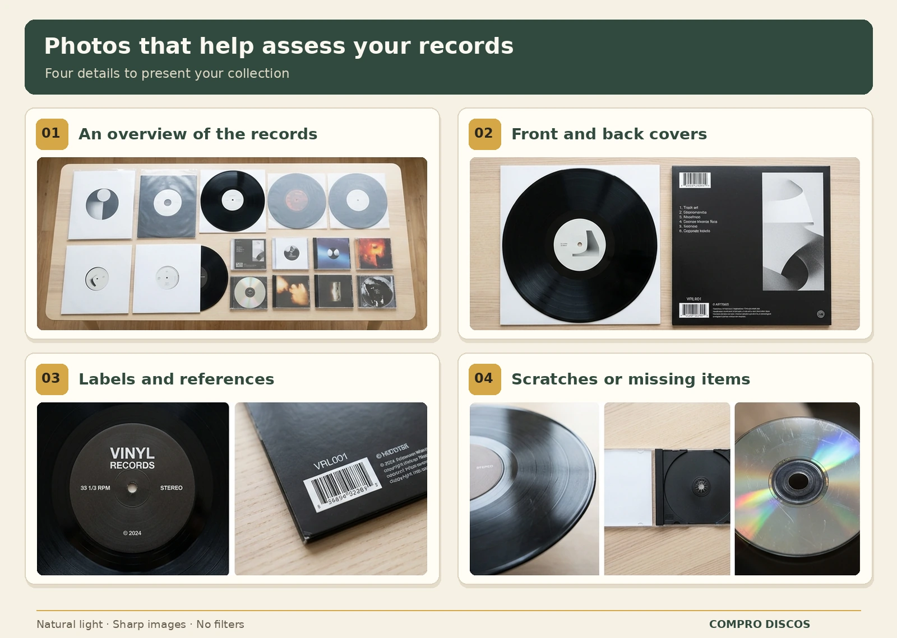

Vinyl records
LPs, singles and EPs. Photograph the covers and labels.

Get in touch to arrange an assessment. I can visit locations in the Lisbon area, including Cascais, Parede, Carcavelos and Oeiras. Other locations by arrangement.

I am interested in vinyl records and CDs across all musical genres. Once I have checked the condition and we have agreed the terms, the purchase and payment can be completed on the spot.
I buy vinyl records and CDs for my personal collection
Your records.New stories.The same passion.
I buy vinyl records and CDs exclusively for my personal collection. Send photographs and tell me about your records.

I Buy VinylRecords and CDs
Private collector · Fair and prompt assessment

I am Paulo Morais, a vinyl and CD collector for over 30 years. I enjoy choosing an album, discovering its artwork and revisiting a song that has stayed with me.
Discover my story ↗LPs, singles and EPs. Photograph the covers and labels.
Include artists, titles and the condition of cases and booklets.
Send an overview and an approximate quantity.
Private collector · Paulo Morais

Simple, direct and personal
Send photographs, quantity and your location.
If the records interest me, we can discuss a possible offer.
We agree on the price, payment and delivery before shipping.
Not to start the conversation. Send an overview and readable covers.
Yes. You may offer vinyl, CDs or both, including titles and condition.
Yes. The email form accepts up to five JPG, PNG or WebP images with a 10 MB combined maximum. On WhatsApp, attach them in the conversation.
Have vinyl records or CDs you no longer listen to? I am Paulo Morais and I buy records for my personal collection. Tell me what you would like to sell, the approximate quantity, condition and location.
You can contact me from Cascais, Parede, Carcavelos, Oeiras or elsewhere in Greater Lisbon. Any visit and purchase terms are agreed directly after an initial assessment. This is not a shop open to the public.
Private collector · Paulo Morais
Choose email or WhatsApp. An enquiry does not commit you to selling or guarantee a purchase.